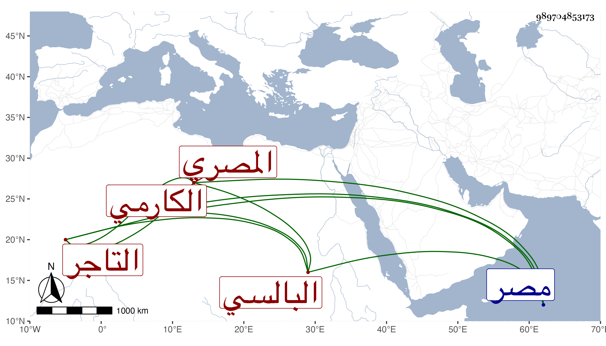

0902Sakhawi.DawLamic.ITO20230111-ara1.EIS1600.989704853173
Biography ID: 989704853173
84
تجار ابنة محمد بن محمد بن حسين بن مسلم بفتح المهملة واللام الثقيلة أم عبد الله وتدعى ست التجار ابنة ناصر الدين بن تقي الدين بن أمين الدين البالسي المصري التاجر الكارمي زوج السراج الخروبي . ولدت في وسط سنة ست وستين وسبعمائة فيما قاله شيخنا . وقال غيره سنة إحدى وستين تقريبا وأجاز لها العز أبو عمر بجماعة فهرست مروياته وغيره . وحدثت سمع منها الفضلاء وممن قرأ عليها شيخنا لأجل سبطه وكانت من بيت رياسة وثروة أقامت مع زوجها أكثر من ثلاثين سنة ومات فلم تتزوج بعده . وماتت في شعبان سنة ثمان وأربعين بمصر رحمها الله . ذكرها شيخنا في معجمه باختصار وتبعه المقريزي في عقوده .
